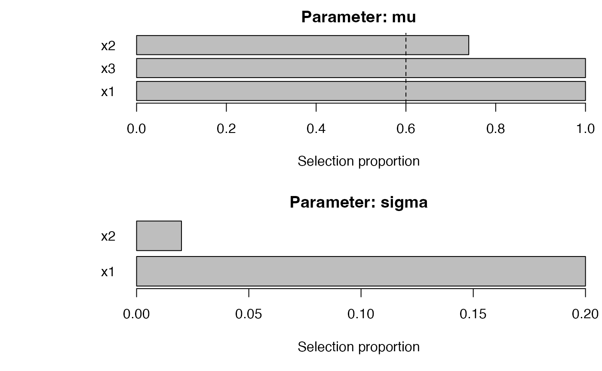
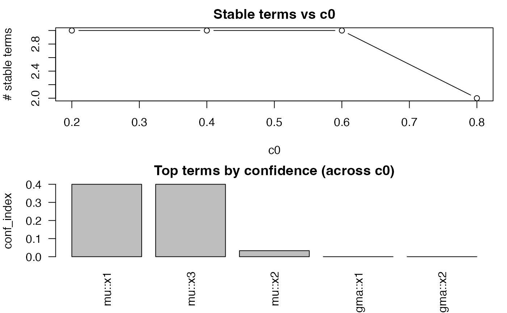
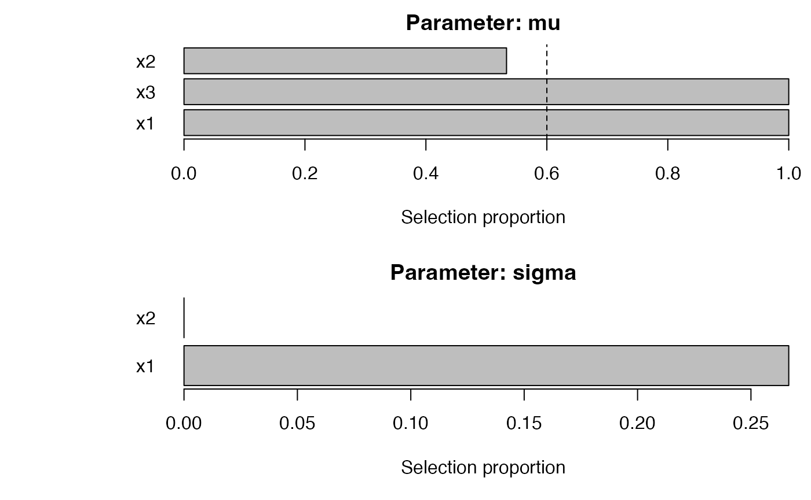
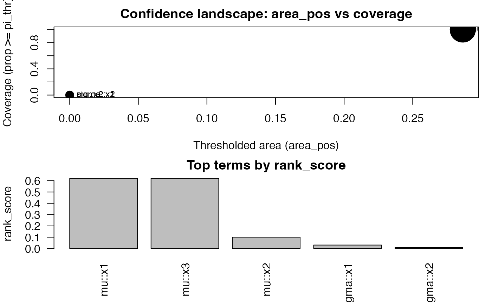

Stability-Selection for GAMLSS with SelectBoost.gamlss
Frédéric Bertrand
Cedric, Cnam, Parisfrederic.bertrand@lecnam.net
2025-10-24
Source:vignettes/selectboost-gamlss.Rmd
selectboost-gamlss.RmdThis vignette demonstrates bootstrap stability-selection for GAMLSS models.
Conference highlight. SelectBoost for GAMLSS was presented at the Joint Statistics Meetings 2024 (Portland, OR) in the talk “An Improvement for Variable Selection for Generalized Additive Models for Location, Shape and Scale and Quantile Regression” by Frédéric Bertrand and M. Maumy. The presentation stressed how correlation-aware resampling sharpens variable selection for GAMLSS and quantile regression problems even when predictors are numerous and strongly correlated.
set.seed(1)
library(gamlss)
#> Loading required package: splines
#> Loading required package: gamlss.data
#>
#> Attaching package: 'gamlss.data'
#> The following object is masked from 'package:datasets':
#>
#> sleep
#> Loading required package: gamlss.dist
#> Loading required package: nlme
#> Loading required package: parallel
#> ********** GAMLSS Version 5.5-0 **********
#> For more on GAMLSS look at https://www.gamlss.com/
#> Type gamlssNews() to see new features/changes/bug fixes.
library(SelectBoost.gamlss)
n <- 400
x1 <- rnorm(n); x2 <- rnorm(n); x3 <- rnorm(n)
mu <- 1 + 1.5*x1 - 1.2*x3
y <- gamlss.dist::rNO(n, mu = mu, sigma = 1)
dat <- data.frame(y, x1, x2, x3)
fit <- sb_gamlss(
y ~ 1,
mu_scope = ~ x1 + x2 + x3,
sigma_scope = ~ x1 + x2,
family = gamlss.dist::NO(),
data = dat,
B = 50,
sample_fraction = 0.7,
pi_thr = 0.6,
k = 2,
pre_standardize = TRUE,
trace = FALSE
)
#> GAMLSS-RS iteration 1: Global Deviance = 1145.937
#> GAMLSS-RS iteration 2: Global Deviance = 1145.937
fit$final_formula
#> $mu
#> y ~ x1 + x2 + x3
#>
#> $sigma
#> ~1
#> <environment: 0x1158dd698>
#>
#> $nu
#> ~1
#> <environment: 0x1158dd698>
#>
#> $tau
#> ~1
#> <environment: 0x1158dd698>
sel <- selection_table(fit)
sel <- sel[order(sel$parameter, -sel$prop), , drop = FALSE]
head(sel, n = min(8L, nrow(sel)))
#> parameter term count prop
#> 1 mu x1 50 1.00
#> 3 mu x3 50 1.00
#> 2 mu x2 37 0.74
#> 4 sigma x1 10 0.20
#> 5 sigma x2 1 0.02
stable <- sel[sel$prop >= fit$pi_thr, , drop = FALSE]
if (nrow(stable)) {
stable
} else {
cat("No terms reached the stability threshold of", fit$pi_thr, "for this run.\n")
}
#> parameter term count prop
#> 1 mu x1 50 1.00
#> 3 mu x3 50 1.00
#> 2 mu x2 37 0.74
plot_sb_gamlss(fit, top = 10)
if (requireNamespace("ggplot2", quietly = TRUE)) {
print(effect_plot(fit, "x1", dat, what = "mu"))
}
#> Warning in data.frame(data, source = namelist): row names were found from a
#> short variable and have been discarded
#> Prediction failed for parameter 'mu': arguments imply differing number of rows: 100, 101 (fallback failed at row 1: incompatible dimensions).selection_table() ranks stable terms for each parameter;
the chunk above prints the eight strongest effects (sorted by stability)
alongside the terms exceeding the stability threshold.
plot_sb_gamlss() overlays selection frequency
vs. coefficient magnitude, and effect_plot() visualizes
partial effects (using ggplot2 if available, otherwise
base R).
Grouped penalties and parameter-specific engines
SelectBoost.gamlss lets you mix-and-match engines across parameters.
Grouped penalties (via grpreg and SGL)
keep whole factors/spline bases/interactions together, while
engine, engine_sigma, engine_nu,
and engine_tau control the selection backend
individually.
set.seed(2)
f <- factor(sample(letters[1:3], n, TRUE))
dat2 <- transform(dat, f = f, x4 = rnorm(n))
fit_grouped <- sb_gamlss(
y ~ 1,
mu_scope = ~ f + x1 + pb(x2) + x3 + x1:f,
sigma_scope = ~ f + x1 + pb(x2),
family = gamlss.dist::NO(),
data = dat2,
engine = "grpreg", # μ: grouped penalty
engine_sigma = "sgl", # σ: sparse group lasso
engine_tau = "glmnet", # τ (if present) would fall back automatically
grpreg_penalty = "grLasso",
sgl_alpha = 0.7,
B = 40,
pi_thr = 0.6,
pre_standardize = TRUE,
trace = FALSE
)
#> GAMLSS-RS iteration 1: Global Deviance = 1745.571
#> GAMLSS-RS iteration 2: Global Deviance = 1745.503
#> GAMLSS-RS iteration 3: Global Deviance = 1745.488
#> GAMLSS-RS iteration 4: Global Deviance = 1745.487
#> GAMLSS-RS iteration 5: Global Deviance = 1745.487
sel_grouped <- selection_table(fit_grouped)
sel_grouped <- sel_grouped[order(sel_grouped$parameter, -sel_grouped$prop), , drop = FALSE]
head(sel_grouped, n = min(8L, nrow(sel_grouped)))
#> parameter term count prop
#> 1 mu f 0 0.000
#> 2 mu x1 0 0.000
#> 3 mu pb(x2) 0 0.000
#> 4 mu x3 0 0.000
#> 5 mu f:x1 0 0.000
#> 7 sigma x1 40 1.000
#> 6 sigma f 29 0.725
#> 8 sigma pb(x2) 22 0.550
stable_grouped <- sel_grouped[sel_grouped$prop >= fit_grouped$pi_thr, , drop = FALSE]
if (nrow(stable_grouped)) {
stable_grouped
} else {
cat("No terms reached the stability threshold of", fit_grouped$pi_thr, "for this run.\n")
}
#> parameter term count prop
#> 7 sigma x1 40 1.000
#> 6 sigma f 29 0.725Grouped engines build design matrices internally (safely handling
factors/splines) and retain original formulas for the final
gamlss refit.
SelectBoost integrations: c0 grids, autoboost, and fastboost
The SelectBoost wrappers expose correlation-aware grouping and automated c0 choice.
grid_obj <- sb_gamlss_c0_grid(
y ~ 1,
data = dat,
family = gamlss.dist::NO(),
mu_scope = ~ x1 + x2 + x3,
sigma_scope = ~ x1 + x2,
c0_grid = seq(0.2, 0.8, by = 0.2),
B = 30,
pi_thr = 0.6,
pre_standardize = TRUE,
trace = FALSE,
progress = TRUE
)
#> | | | 0%GAMLSS-RS iteration 1: Global Deviance = 1145.937
#> GAMLSS-RS iteration 2: Global Deviance = 1145.937
#> | |================== | 25%GAMLSS-RS iteration 1: Global Deviance = 1145.937
#> GAMLSS-RS iteration 2: Global Deviance = 1145.937
#> | |=================================== | 50%GAMLSS-RS iteration 1: Global Deviance = 1145.937
#> GAMLSS-RS iteration 2: Global Deviance = 1145.937
#> | |==================================================== | 75%GAMLSS-RS iteration 1: Global Deviance = 1149.895
#> GAMLSS-RS iteration 2: Global Deviance = 1149.895
#> | |======================================================================| 100%
plot(grid_obj)
confidence_table(grid_obj)
#> parameter term conf_index cover
#> 1 mu x1 0.40000000 1.00
#> 5 mu x3 0.40000000 1.00
#> 3 mu x2 0.03333333 0.75
#> 2 sigma x1 0.00000000 0.00
#> 4 sigma x2 0.00000000 0.00
auto_obj <- autoboost_gamlss(
y ~ 1,
data = dat,
family = gamlss.dist::NO(),
mu_scope = ~ x1 + x2 + x3,
sigma_scope = ~ x1 + x2,
c0_grid = seq(0.2, 0.8, by = 0.2),
B = 30,
pi_thr = 0.6,
pre_standardize = TRUE,
trace = FALSE
)
#> | | | 0%GAMLSS-RS iteration 1: Global Deviance = 1145.937
#> GAMLSS-RS iteration 2: Global Deviance = 1145.937
#> | |================== | 25%GAMLSS-RS iteration 1: Global Deviance = 1145.937
#> GAMLSS-RS iteration 2: Global Deviance = 1145.937
#> | |=================================== | 50%
#> Warning in RS(): Algorithm RS has not yet converged
#> Warning in RS(): Algorithm RS has not yet converged
#> GAMLSS-RS iteration 1: Global Deviance = 1145.937
#> GAMLSS-RS iteration 2: Global Deviance = 1145.937
#> | |==================================================== | 75%GAMLSS-RS iteration 1: Global Deviance = 1145.937
#> GAMLSS-RS iteration 2: Global Deviance = 1145.937
#> | |======================================================================| 100%
attr(auto_obj, "chosen_c0")
#> [1] 0.4
fast_obj <- fastboost_gamlss(
y ~ 1,
data = dat,
family = gamlss.dist::NO(),
mu_scope = ~ x1 + x2 + x3,
sigma_scope = ~ x1 + x2,
B = 30,
sample_fraction = 0.6,
pi_thr = 0.6,
pre_standardize = TRUE,
trace = FALSE
)
#> GAMLSS-RS iteration 1: Global Deviance = 1149.895
#> GAMLSS-RS iteration 2: Global Deviance = 1149.895
plot_sb_gamlss(fast_obj)
Use progress = TRUE on any of these helpers to monitor
grid/config iteration.
Confidence summaries and effect diagnostics
confidence_functionals() collapses stability curves
across the c0 grid into scalar summaries (AUSC, coverage, quantiles,
weighted, conservative). The output ranks terms and integrates
seamlessly with plot() and
plot_stability_curves().
cf <- confidence_functionals(
grid_obj,
pi_thr = 0.6,
q = c(0.5, 0.8, 0.9),
conservative = TRUE,
B = 30
)
head(cf)
#> area area_pos w_area cover sup inf q50
#> 1 0.886482909 0.2864829 0.886482909 1 0.88648291 0.88648291 0.88648291
#> 3 0.886482909 0.2864829 0.886482909 1 0.88648291 0.88648291 0.88648291
#> 2 0.451246924 0.0000000 0.451246924 0 0.52123879 0.33153851 0.43916649
#> 4 0.103763906 0.0000000 0.103763906 0 0.16664563 0.07336434 0.09564337
#> 5 0.008849282 0.0000000 0.008849282 0 0.05309569 0.00000000 0.00000000
#> q80 q90 parameter term rank_score
#> 1 0.88648291 0.88648291 mu x1 0.620538036
#> 3 0.88648291 0.88648291 mu x3 0.620538036
#> 2 0.48157499 0.50140689 mu x2 0.100281378
#> 4 0.13741169 0.15202866 sigma x1 0.030405731
#> 5 0.02123828 0.03716699 sigma x2 0.007433397
plot(cf, top = 8)
plot_stability_curves(grid_obj, terms = c("x1", "x3"), parameter = "mu")
For model interpretation, pair the stability summaries with
partial-effect diagnostics via effect_plot() (see the
quick-start example above) or use selection_table() to
inspect the final refit.
Tuning engines and penalties
tune_sb_gamlss() evaluates different engine/penalty
configurations using either stability or deviance metrics (with optional
K-fold CV). Supply a list of configurations and a shared baseline of
arguments.
configs <- list(
list(engine = "stepGAIC"),
list(engine = "glmnet", glmnet_alpha = 1),
list(engine = "grpreg", grpreg_penalty = "grLasso", engine_sigma = "sgl", sgl_alpha = 0.8)
)
baseline <- list(
formula = y ~ 1,
data = dat2,
family = gamlss.dist::NO(),
mu_scope = ~ f + x1 + pb(x2) + x3 + x1:f,
sigma_scope = ~ f + x1 + pb(x2),
pi_thr = 0.6,
pre_standardize = TRUE,
sample_fraction = 0.7,
trace = FALSE,
parallel = "auto"
)
tuned <- tune_sb_gamlss(configs, base_args = baseline, B_small = 25, metric = "stability", progress = TRUE)
#> | | | 0%
#> Warning in RS(): Algorithm RS has not yet converged
#> GAMLSS-RS iteration 1: Global Deviance = 1133.433
#> GAMLSS-RS iteration 2: Global Deviance = 1133.433
#> | |======================= | 33%GAMLSS-RS iteration 1: Global Deviance = 1133.433
#> GAMLSS-RS iteration 2: Global Deviance = 1133.433
#> | |=============================================== | 67%GAMLSS-RS iteration 1: Global Deviance = 1743.934
#> GAMLSS-RS iteration 2: Global Deviance = 1743.78
#> GAMLSS-RS iteration 3: Global Deviance = 1743.774
#> GAMLSS-RS iteration 4: Global Deviance = 1743.772
#> GAMLSS-RS iteration 5: Global Deviance = 1743.772
#> | |======================================================================| 100%
tuned$best_config
#> $engine
#> [1] "glmnet"
#>
#> $glmnet_alpha
#> [1] 1Switch metric = "deviance" and set K to
engage fast deviance CV with the optimized density routes.
Fast deviance utilities and diagnostics
Deviance-based tuning reuses
loglik_gamlss_newdata_fast() under the hood. Use
fast_vs_generic_ll() to benchmark the speedup relative to
the generic density evaluator, and check_fast_vs_generic()
to verify numerical agreement (with per-family tolerances).
# Example: compare deviance routes on a fitted model
fit_ga <- gamlss::gamlss(y ~ x1 + x2, sigma.formula = ~ x1, data = dat, family = gamlss.dist::NO())
fast_vs_generic_ll(fit_ga, newdata = dat, reps = 30)
check_fast_vs_generic(fit_ga, newdata = dat, tol = 1e-6)See the dedicated fast-deviance vignettes for expanded results across
many gamlss.dist families.
Parallel bootstraps, progress, and long tests
All bootstrap helpers accept parallel = "auto" to
leverage future.apply (or any plan you set via
future::plan()). Progress bars are enabled via
progress = TRUE on sb_gamlss(), grid/autoboost
helpers, and tune_sb_gamlss().
future::plan(multisession, workers = 4)
fit_parallel <- sb_gamlss(
y ~ 1,
mu_scope = ~ x1 + x2 + x3,
sigma_scope = ~ x1 + x2,
family = gamlss.dist::NO(),
data = dat,
B = 200,
pi_thr = 0.6,
pre_standardize = TRUE,
parallel = "auto",
progress = TRUE,
trace = FALSE
)To opt into the full suite of equality/benchmark tests locally, set
options(SelectBoost.gamlss.run_long_tests = TRUE) or
Sys.setenv(RUN_LONG_TESTS = "true") before running
devtools::test().